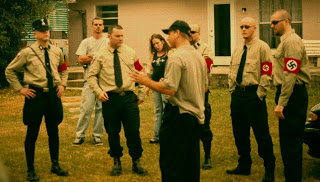
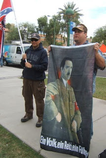

"Valhalla" at work: FBI undercover asset Hal Turner, who was tasked to infiltrate and radicalize the "far right," speaks at a rally sponsored by the FBI-controlled National Socialist Movement (left); below, left, Turner holds forth at an event in Washington, D.C.; below, right, Turner with his attorney following his September 2008 arrest.
We'll be fighting in the streets with our children at our feet
and the morals that they worship will be gone.
And the men who spurred us on sit in judgment of all wrong
they decide, and the shotgun sings the song.
-- Pete Townsend
It's difficult not to experience a faint pang of sympathy for Hal Turner, albeit an ephemeral one deeply buried beneath multiple layers of well-earned disgust.
For at least five years, and probably more, Turner was a paid informant and provocateur in the employ of the world's largest sponsor of terrorism, the Federal Government. His assignment was to bait easily influenced people with incendiary rhetoric about race and other resentments, and reel in anyone who bit a little too lustily on the bait. The Bureau credits Turner with personally bringing more than 100 "extremists" to their attention, many of whom (the Bureau won't specify how many) were arrested.
There's every likelihood that at least some of Turner's victims were offered the same deal offered to Randy Weaver after he was set up on trivial and spurious firearms charges by an undercover snitch for the ATF: Become an informant/provocateur, and you'll stay out of jail.
Weaver rejected the deal, and the FBI eventually retaliated by attacking his home and murdering his wife and son. Jose Padilla, a rougher customer than Weaver, rejected the same deal; he was declared an "enemy combatant," subjected to prolonged torture intended to destroy his mental equilibrium and break his will, and eventually convicted on exceptionally dubious terrorism-related charges.
Before he was outed as a stukach in early 2007, Turner was the host of a web-based talk radio program and a freelance speaker who specialized in "incitement-and-indictment" entrapment of "right-wing extremists." Hackers discovered a cache of e-mail correspondence between Turner and William Haug, an agent working for a Joint Terrorism Task Force who acted as the informant's handler. Turner closed down his radio program while emitting great gusts of affected outrage over what he insisted were spurious accusations that he had collaborated with the Feds.
In a message posted to Pro Libertate after he was identified as an agent provocateur -- along with federal assets tasked to carry out similar agent provocateur missions within Muslim sub-populations in the U.S. -- Turner insisted that only "PARANOID FREAKS (like this blog)" would suspect him of collaboration.

By way of establishing his neo-Nazi bona fides, Turner boasted that "my [white supremacist] rallies in Kingston NY and Kalamazoo, MI cost those cities $60,000 and $120,000 respectively in police overtime and that there's no way the FBI would have approved anything like that by an informant because the cities would have demanded the money back!"
Actually, as we'll see anon, the FBI has no problem staging white supremacist rallies and protest marches that help "local" police departments rack up overtime.
Certainly, the police don't mind making a little extra money by swanning about in riot gear. Events of the sort Turner organized are an intelligence bonanza for the Regime: They give the FBI (and, most likely, other Homeland Security assets) an opportunity to harvest detailed information for federal databases about both "right-wing extremists" and their opposition.

We know this is the case through first-person testimony from an FBI undercover asset who spent nearly a decade worming his way through the "radical right" -- including the National Socialist Movement (NSM).
The NSM's adherents doubtless see themselves as the finely honed blade of a resurgent "white power" movement, a description promoted with similar zeal by professional hate-hucksters like Morris Dees' artfully misnamed Southern Poverty Law Center and the so-called Anti-Defamation League.
Actually, the NSM is "all show, no go" -- it's more of a federally controlled traveling roadshow, sort of a Third Reich tribute band. Its cadres exude all of the raw menace of the hapless Illinois Nazis from The Blues Brothers, and possess all of the street-fighting chops of the bumbling Black Widow biker gang from Clinton Eastwood's Philo Beddoe films.
But I digress.
We were discussing Hal Turner's career as an FBI informant/provocateur code-named "Valhalla," details about which have been pried from the Bureau by reporters for the Bergen (New Jersey) Record.
Beginning in 2003 (or, as Turner claims, 2002), Turner was a paid informant "who spied on his own controversial followers," reports the Record, citing "government documents, e-mails, court records, and almost 20 hours of jailhouse interviews" with the snitch. Turner "received thousands of dollars from the FBI to report on such groups as the Aryan Nations and the white supremacist National Alliance, and even a member of the Blue Eyed Devils skinhead punk band."
"I was not some street snitch," insists Turner. "I was a deep undercover intelligence operative." He demands recognition of that distinction with the same desperate desire for dignity displayed by any other whore who seeks to upgrade his or her job description with a more refined title.

The FBI budgeted at least $100,000 to pay for Turner's performances, both on his radio program and in public speeches. He now insists that he was merely role-playing on behalf of his pimps -- both the FBI's Special Agent Haug and New Jersey State Police Detective Leonard Nerbetski, who also served on the Newark Joint Terrorism Task Force.
As he tells the story, Turner was required to feign passion for various unsavory causes: In interviews with the Record, Turner maintained that "the FBI coached him to make racist, anti-Semitic and other threatening statements and new now feels double-crossed by the Bureau after his arrest."
"The audience loves the rip-roaring radio psycho," Turner boasted in an e-mail to the FBI. "They literally throw money at it. Just be confident that the personality you hear (or hear about) on radio is not real life. I have zero intention of doing anything stupid."
In the guise of the "radio psycho," Turner -- with the FBI's help -- was pulling down about $15,000 a month to express such edifying sentiments as the following: "A full day of violence against blacks would be a really nice thing.... [L]ynchings, church burnings, drive-by shootings and bombings [would] put these subhuman animals back in their place."
Turner materialized at various white power gatherings in several states. He also traveled to Brazil on the FBI's dime to spy on suspected white supremacists in that country, as well as to investigate an alleged plot by white supremacists and Brazilian Arabs to send "consumer goods" to resistance fighters in Iraq. It's difficult to believe that the CIA remained entirely aloof from that aspect of Turner's career.
While the FBI was willing to abet Turner's efforts to incite violence against innocent people, the Feds moved against him shortly after he published comments on his blog interpreted as death threats against three judges in Chicago. He was arrested shortly before the 2008 election and is scheduled to stand trial this week.
As the song says, "some men like the fishin', some men like the fowlin', and some men like to hear the cannonball a-roarin." Turner likes nothing more than hearing the sound of his own voice. Yet "here I am in prison, betrayed," he laments, arrested by the same FBI Special Agent who recruited him and -- he plaintively maintains -- fed him his lines.
"I was given specific instructions," Turner declares, and he played the role of racist agitator out of his duty as "a loyal, patriotic decent American citizen."


Provocateur as auteur: FBI undercover informant David Gletty (back to the camera, wearing a baseball cap) helped direct and stage-manage a 2007 neo-Nazi march in Orlando. He also collected a huge volume of intelligence on other groups, including white power outfits and legitimate immigration reform and constitutionalist organizations.Turner may be telling the truth. His experiences are eerily similar to those recounted by former FBI "deep cover" operative (and one-time Roller Derby star -- no, I'm not kidding) David Gletty in his ineptly written but highly useful memoir Undercover Nazi: The FBI Infiltration of Extremist Groups in America.
In what strikes me as a transparent effort to cultivate a marketable mystique, Gletty says that many details of his work as a paid FBI snitch remain "classified." He claims to have been recruited in 2000 when, as the leader of a constitutional militia, he came across a plot by an Appalachian white supremacist to set off a string of radiological bombs in collaboration with al-Qaeda.
Recruited as a "deep cover" operative, Gletty spent several years cultivating ties with "extremist" groups, including elements of the KKK, the Hammerskins, and eventually the National Socialist Movement. He was careful to get his "ticket punched" by working with legitimate dissident groups such as the League of the South, and various immigration reform groups, such as at least one element of the Minuteman volunteer border watch movement.
Gletty's most notable achievement was to infiltrate and become leader of a National Socialist Movement chapter in Florida and organize a 2006 NSM march in Orlando that was intended to sow fear and anger in a predominantly black neighborhood.
To prepare for that role, Gletty behaved much as Hal Turner had, fulminating in public about the supposed inferiority of non-white people and befouling the air with exhortations to collectivist violence. This not only legitimized Gletty in the eyes of his comrades in the NSM, it also helped to rile up the group's enemies, thereby ensuring a large turnout of counter-protesters for the February 2006 march in Orlando -- which was exactly what the Bureau desired.


He's like that "John 3:16 Guy," except, you know, a Nazi: Neo-Nazi agitator J.T. Ready, an uninvited guest during a recent immigration control event in Arizona, holds up a portrait of his Fuhrer.During his years as an informant/provocateur, Gletty was usually accompanied by a fellow asset he identifies only as "Joe." During the Orlando protest, Gletty recalls, Joe carried a concealed digital camera "for taking all the photos he could of protesters and counter-protesters. Then the images would be fed into the FBI face recognition computer. At least 1000 faces for the computer to digest."
In addition to producing a bounty of biometric intelligence for the FBI, the Orlando rally offered a good dry run for a future Homeland Security crack-down. Gletty points out that his FBI handler was "actually pumped up" about the Orlando march, "because the protest would be a great training exercise for the Orlando Police Department, Orange County Sheriff's Department, the FBI, and MBI [the Central Florida Metropolitan Bureau of Investigation] as they would all be in attendance."
As a leader in the white supremacist underground, Gletty held many "surveillance parties" -- not only public events, but private functions used to gather intelligence and, where possible, set up various low-level thugs to become informant/provocateurs themselves.
For three years, "Joe and I ... traveled from state to state, rally to rally, and party to party, infiltrating the White Power Movement in America," Gletty recalls. "Thousands of miles, hundreds of photographed faces, and a myriad of tape recordings were contributing to the eradication of racial and religious prejudice in America."
Playing their role: NSM poseurs take refuge behind riot police during a recent anti-Mexican demonstration in Riverside, California.

Really? To judge from recent attention earned by the NSM, Gletty's mission was not to help "eradicate" prejudice (as if this could be accomplished through government intervention), but rather to bring the group more completely under the FBI's control.
The NSM is a remnant of George Lincoln Rockwell's American Nazi Party (ANP). According to Hate: George Lincoln Rockwell and the American Nazi Party, the ANP was thoroughly compromised through the FBI's notorious COINTELPRO operation; by the time of his murder in 1967, Rockwell was widely believed to be a "patsy" for the FBI or some other intelligence agency.
One objective of the anti-ANP COINTELPRO operation was to create a rift between Rockwell's Nazi outfit and the United Klans of America. By the late 1970s, the Klan was thoroughly honeycombed with FBI assets. In fact the Bureau boasted that it had enough Klansmen on its payroll in North Carolina to elect that state's Grand Dragon: At one point, 7 of the 8 members of a Charlotte Klan chapter reportedly were FBI assets informing on the klavern's sole non-federal employee.
Edward Dawson, an informant/provocateur on the payroll of the Greensboro police department and under the supervision of the FBI, helped orchestrate a November 3, 1979 street clash between white supremacists and Communists that left five people dead. The "White Power" contingent included elements of both the Klan and the American Nazi Party, whose FBI-engineered rift had apparently healed sufficiently to permit joint action.
A sitcom-worthy simulacrum of streetfighting: NSM members square off against the equally ludicrous "Brown Berets de Aztlan" in Riverside, California.

The National Socialist Movement's current strategy is to provoke tumult and violence, rather than participating in it directly. In recent weeks the group has achieved a relatively high profile by staging anti-immigration rallies in Riverside, California and Phoenix, Arizona.
In California, a small knot of NSM denizens faced off with members of "Los Brown Berets de Aztlan," a foundation-funded militant Chicano group, with riot police clad in body armor on hand to maintain "order." A few weeks later the group inflicted itself on an immigration- reform protest in Arizona during which the group's most visible spokesperson, J.T. Ready, unfurled a portrait of Adolf Hitler.

Ready -- a dishonorably discharged ex-Marine -- is a pretty good candidate to be the next NSM figure outed as an asset of the Feds. An ambulatory wad of cholesterol and bile, Ready looks like the unfortunate result of a genetic experiment combining the most unpleasant traits of Ernst Roehm and Chris Farley.
While certainly not telegenic, Ready has achieved a certain media prominence as a result of his candor in reciting the Nazi party line.
The sudden prominence of the NSM has been noted -- with a detectable hint of gratitude -- by left-collectivists eager to shoehorn resistance to the Obama Regime into a pre-determined narrative: Critics of the Blessed One and his administration are animated by concealed bigotry, according to this reading, whether they know it or not, and their rhetoric is creating an "atmosphere" of incipient violence that will engender domestic terrorism.
It should be remembered that the same tropes were put into play early in the last Democratic administration, just before the 1995 Oklahoma City Bombing -- a terrorist act for which disenchanted former federal employee Timothy McVeigh was executed, but was actually carried out with the help of "others unknown," including several federal assets connected to a bizarre little white supremacist commune known as Elohim City.
The Regime has gone to a great deal of trouble to keep the otherwise moribund White Power movement on life support. It's simply too useful as a political foil -- and, occasionally, as an instrument of politically useful violence -- for the Regime to let it die.
UPDATE: Mistrial for Turner
Judge Donald Walter declared a mistrial in Hal Turner's federal trial in Brooklyn yesterday as the jury deadlocked 9-3 in favor of acquittal. Turner faces a possible ten-year prison sentence on charges that he threatened to kill three federal judges in remarks posted to his blog while he was on the FBI's payroll as a provocateur.
Assistant U.S. Attorney William Hogan, who is heading the prosecution, called Turner a "domestic terrorist." His case against the erstwhile federal informant relied entirely on the testimony of six federal agents. If Hogan were serious about his description of Turner, his next act should be to seek an indictment against at least some of his witnesses, given that they were materially aiding and abetting terrorism.
For the record, it is my view that the case against Turner (who, significantly, remains under a federal gag order) is bollocks. His "crime" consisted of quoting Thomas Jefferson's observation that "The Tree of liberty must be replenished from time to time by the blood of tyrants and patriots" and applying those words to three federal judges whose crimes against liberty and decency were much graver than those of anyone connected to King George III.
Note well that Turner was not reined in, much less arrested and jailed, for openly urging criminal violence against innocent people of various ethnic and religious backgrounds, as his handlers (per his account) instructed him to do. Instead, he was slapped in irons and put behind bars for the purported crime of using Revolutionary War-style invective when decrying the crimes of the sanctified personages who occupy the federal bench.
The last full measure of usefulness the Feds could wring from Turner would be to convict him for using political speech in a case that could be used to criminalize emphatic, effective criticism of our rulers. If Turner actually ends up being convicted and sent to prison, his career would essay a remarkable trajectory: He began as an asset of the Security Organs, and might wind up as a political prisoner.
Assistant U.S. Attorney William Hogan, who is heading the prosecution, called Turner a "domestic terrorist." His case against the erstwhile federal informant relied entirely on the testimony of six federal agents. If Hogan were serious about his description of Turner, his next act should be to seek an indictment against at least some of his witnesses, given that they were materially aiding and abetting terrorism.
For the record, it is my view that the case against Turner (who, significantly, remains under a federal gag order) is bollocks. His "crime" consisted of quoting Thomas Jefferson's observation that "The Tree of liberty must be replenished from time to time by the blood of tyrants and patriots" and applying those words to three federal judges whose crimes against liberty and decency were much graver than those of anyone connected to King George III.
Note well that Turner was not reined in, much less arrested and jailed, for openly urging criminal violence against innocent people of various ethnic and religious backgrounds, as his handlers (per his account) instructed him to do. Instead, he was slapped in irons and put behind bars for the purported crime of using Revolutionary War-style invective when decrying the crimes of the sanctified personages who occupy the federal bench.
The last full measure of usefulness the Feds could wring from Turner would be to convict him for using political speech in a case that could be used to criminalize emphatic, effective criticism of our rulers. If Turner actually ends up being convicted and sent to prison, his career would essay a remarkable trajectory: He began as an asset of the Security Organs, and might wind up as a political prisoner.
 Be sure to tune in for Pro Libertate Radio (6:00-7:00 Mountain time) on the Liberty News Radio Network.
Be sure to tune in for Pro Libertate Radio (6:00-7:00 Mountain time) on the Liberty News Radio Network. Dum spiro, pugno!
34 comments:
That was an exceptional piece of writing. Loved the "neo-Nazi tribute band" line.
Divide and conquer still works after all these years. We are doomed as a species. Pass the forks.
"An ambulatory wad of cholesterol and bile"
I don't think the word-picture gets any better than that!
How Our Government Treats Tattletales!
Dear Congressman Johnson
http://hankjohnson.house.gov/
I am Sherry Peel Jackson, your former CPA. I am writing you because I am concerned about my health and my life. Prior to becoming a political prisoner I was the picture of health.
http://hellomichigan.blogspot.com/
http://carlosmiller.com/2009/12/01/arizona-detention-officer-refuses-to-apologize-for-swiping-court-files/
On a purely psychological level, one-dimensional characters are so rarely genuine, it's a byword. The most dangerous and creepy people I've ever known seemed most of the time quite ordinary. When someone is really so good at acting they are able to portray it with full depth, they usually get paid a lot better in Hollywood.
Then again, seeing what comes out of Hollywood these days, I'm not surprised Turner made such a wide impression. Still, it doesn't require monumental intelligence to see when someone is bogus, though it may require intelligence not commonly seen. Even if the character we are seeing is only fooling himself, it's not a matter of what you know about the subject if you know enough about human nature.
The disillusioned and rudderless led by "actors" paid by the aforementioned. Wow! You can't make this stuff up. Or can you? Some say art imitates life or the other way around. How utterly bizarre.
The writings are coming fast and furious here recently thanks for sharing!
"Ready looks like the unfortunate result of a genetic experiment combining the most unpleasant traits of Ernst Roehm and Chris Farley."
One of your best lines ever!!! Hilarious!!!
Really though, does anyone other than the serially deranged Morris Dees actually take any of these groups seriously?
What concerns me though is how many Feds have infiltrated such good and necessary groups like the Oath Keepers and the Three-percenters?
The Standing Army is watching you. For your own good of course.
I've often wondered how many 'agent provocateurs' troll your site. There are a handful of regulars that seem pretty consistent - but there are also those that drift in and out seem to fit the bill. Just a random thought . . .
In Male Fide
Sic Semper Tyrannis
Neo-Nazis. Sorry, I just have to chuckle when I see them. They remind me so much of self-important tax parasites: acting like they're on a crusade for "the common good," while just being a bunch of pathetic thugs in uniform.
Not surprising that a guy sent by the FBI would be so skilled at directing impressionable young idealistic punks.
-Sans Authoritas
It looks like MOT summed up my statement before I made it!
Good to see people who can see the irony in this situation.
-Sans Authoritas
I must object to your comparison of Mr. Turner with "any other whore". I have nothing but respect for women who offer an honest service for an agreed-upon price, whereas frauds like Hal Turner earn nothing but disgust.
WNG understands the reality of politics as few others.
I wonder if he may recall a Los Angeles Times newsman, Jack Nelson, who died last month. Nelson, in an interview, spoke aboutan alphabet agency shooting of KKK fellow and a schoolteacher Kathy Ainsworth back in the late 1960s. Nelson said, in so many words, that an alphabet agency came to MS to do murder, those are Nelson's words not mine.
I have to say I feel sorry for these White guys with the government power players riding them.
WNG did you ever look into the case of Matt Hale?
Anyone reading deeply about the case would have to feel an icy chill up their spine, because after they come for the WNs they come for the rest. If you think Rahm wants to stop at David Duke...
Say, are there still plans to make your radio show a 2 hour deal? Then you could have the occasional guest on. Not that I don't enjoy a monologue from you. Great show, and great blog.
Keep it up, man.
JohnS
kind of like a "neo nazi tribute band" - classic line!
My apologies to "Ulfhethnar" -- I mistakenly deleted your comment. Please post it again.
WhiteBuffalo,
About the oath keepers and the 3%ers.
I would be very suspicious of any member who suggests any illegal act or who offers to help the group gain access to various military arms and munitions. Both are stock and trade of Fed informants. There was an old joke about the "way to spot the FBI agent at the Klan/militia/whatever meeting was that he was the one always wanting to blow something up." (Note, I am not comparing any legit group to the Klan, but it was one of the versions I have heard.)
As an edit to my last post, the Fed informant in the Miami "terrorist" case even offered boots and uniforms.
Finally went to look at your radio show. Very cool. I'm working my way through your archives.
RuPaul Revere just rode through on a pink Vespa scooter with a Playskool bullhorn saying "the provocateurs are coming, the provocateurs are coming!" Yes the status quo elites are trembling in fear of the preach to the choir blog comments echo chamber! Never fear the same three lonely pathetic anus blog groupie keyboard commandos will rally around the comments section and make sure no one gets a word in edgewise as they comment on every post with nicknames and posing as anonymous. All the cool kids on the block would sign up for the paytroll but they are busy having a life, and they will have to take off their pajamas and move out of their parent's basement after too much of the lucrative provocateur paytroll payoff. Pray tell what are these provocateur poseurs provoking?
Provoking some blog groupies to ride on the jockstrap harder? Provoking some hot head to say something foolish to agitate? Newsflash no one gives a rat's ass about some text on a screen as long as you don't say something anti-semetic or threaten the president.
"irregulars are informants said..."
.... You say something?
The Alphabet Agencies of the US Government are utterly evil - much worse than the poor deluded fools who think they are upholding the torch of Nazism, or Pacifism, or Communism, or Libertarianism, or any other -ism.
This is because the U.S. 3-letter Agencies are highly intelligent and coldly deliberate in their evils, while the well-intentioned, idealistic and frustrated Don Quixotes who tilt at windmills are usually deficient in education, brainpower, and their comprehension of the powers arrayed against them. They fall right into the traps set for them by the minions of Satan that rule us.
It has been that way for decades, probably for a century or more. We did not start out this way in 1776. Perhaps nobody can tell us what we have lost better than Thomas Paine, writing in Philadelphia in April, 1783:
"Never, I say, had a country so many openings to happiness as this. Her setting out in life, like the rising of a fair morning, was unclouded and promising. Her cause was good. Her principles just and liberal. Her temper serene and firm. Her conduct regulated by the nicest steps, and everything about her wore the mark of honor. It is not every country (perhaps there is not another in the world) that can boast so fair an origin....The remembrance, then, of what is past, if it operates rightly, must inspire her with the most laudable of all ambitions, that of adding to the fair fame she began with. The world has seen her great in adversity; struggling, without a thought of yielding, beneath accumulated difficulties, bravely, nay proudly, encountering distress, and rising in resolution as the storm increased....In this situation, may she never forget that a fair national reputation is of as much importance as independence. That it possesses a charm that wins upon the world, and makes even enemies civil. That it gives a dignity which is often superior to power, and commands reverence, where pomp and splendor fail....It would be a circumstance ever to be lamented and never to be forgotten, were a single blot, from any cause whatever, suffered to fall on a revolution, which to the end of time must be an honor to the age that accomplished it; and which has contributed more to enlighten the world, and diffuse a spirit of freedom and liberality among mankind, than any human event (if this may be called one) that ever preceded it."
See how much we have lost! What a depressing tragedy. We have sold our birthright for a mess of pottage. (Actually, for about 14 trillion dollars.) What shall it profit us, if we gain the whole world, and lose our own soul? Our honor? Our self-respect? Those in the world who remember what we used to be cry for an America that seems to have passed away.
Tom Joad
There's Surely More Than Meets Eye For This Hal Turner Episode
(Apollonian, 6 Dec 09)
I take it Grigg, the author, wants to make a pt. the gov. has interest in "divide-and-conquer" among the various different races, peoples, etc., of present USA--which pt. for Grigg I think is quite understandable.
But then Grigg goes to considerable lengths to insert his numerous aside comments, and I submit the original pt. gets quite lost.
For I wonder just exactly how this provocateur ruse is/was really supposed to work--is it that Hal Turner (and FBI), running a kind of a "sting," was supposed to "flush-out" criminals who were attempting themselves to commit violent and criminal acts?--this is what I gather fm Grigg's text. Correct me if I'm wrong.
And so I wonder what exactly was supposed to happen?--criminals and conspirators were supposed to contact Hal Turner in order to get Hal involved?--which then would allow Hal to go tattling to FBI?--seems rather simplistic to me, though still quite plausible.
But then supposing the fore-going was actually what happened--fools calling up Hal Turner the provocateur, these fools WHO DIDN'T EVEN KNOW Hal Turner. So who exactly would these people be?--they are or would be just other, rival, provocateurs, right?--unless they were genuine criminals, in which case they couldn't be too smart, divulging their intentions and plans so easily and readily to someone, like Hal Turner, they knew nothing about.
And who then would these other provocateurs most likely be?--most probably they'd just be working themselves for such as the SPLC (Southern Poverty Legal Center), wouldn't they?
So then wouldn't it just be a case of the FBI, making use of Hal Turner, un-covering then mostly just the work of rival agencies?--running their own operations, perhaps even the CIA--or such as MOSSAD, or JDL (Jewish Defense), or ADL (Anti-Defamation)?
And so then, wouldn't this un-covering by FBI of these rival organizations be the real problem and issue? For if the ADL or SPLC got caught, they would surely complain against FBI, wouldn't they?--and specifically they'd complain against Hal Turner quite a bit too, wouldn't they?
Thus we begin to seeing the real activity which is taking place. The FBI ends up as a sort of mediation agency in the middle among an entire host of competing, rival organizations, like ADL and SPLC. And Hal Turner ends up in all truth as primary VICTIM of this provocateuring activity.
After all, Hal Turner surely only accepted that money fm FBI in best of "good faith" and then further went on for his assertion of his rights to free speech, having learned and become so adept and effective for what he really was good at doing--expressing his views, such as they were.
CONCLUSION: So the pt. is Hal Turner surely deserves quite a lot more sympathy than Grigg perversely allows is justified. For the white people of USA are truly and justifiably aggrieved for the invasions and depradations they've suffered--especially for the betrayal by their leaders. And Hal Turner REALLY HAS done most excellent work flushing out such as the SPLC and ADL, to name just a couple of criminal perpetrators.
One board creaks and out come the freaks. (with a nod to was-not-was). Yowza! Will... you certainly know how to flush out all sorts of "birds of a feather". That their fingers manage to goose-step across a keyboard and hammer out some sort of screed is remarkable.
The government plot isn't to divide races, it's to force them together against their will in order to destroy the Normal White America for which the judeo-left harbors a genocidal hatred.
White men don't want to live around niggers. Never have, never will. Grigg ideology prevents him from respecting that obvious fact.
Anybody even superficially familiar with what I've written would recognize that I've never supported social engineering in any form -- whether through forced association ("integration") or divide-and-conquer.
One of the ironies of our situation is that the Regime ruling us can carry out both varieties of manipulation simultaneously.
On the other hand, I've consistently supported secession and other forms of voluntary dissociation, whether individually or through communities of shared interest.
Not being white, I wouldn't presume to speak on behalf of "Normal White America." Most white people I know, however, aren't incurably handicapped by ethnic insecurity, as "white power" collectivists would insist.
Anybody even superficially familiar with what I've written would recognize that I've never supported social engineering in any form -- whether through forced association ("integration") or divide-and-conquer.
I didn't say you supported those things. You're against them, per your ideology, and what's more, I accept that you actually believe what you say you believe, which is not always the case with people writing about politics. Libertarians are typically too scared to write the truth about race, or even allow comments touching on that truth on their website - Karen DeCoster is one of a dozen examples. You dare to allow my comment because you have the protection of being black, so you can't be called racist for allowing the entertainment of certain facts.
One of the ironies of our situation is that the Regime ruling us can carry out both varieties of manipulation simultaneously.
True, but what matters is your repeating the patriotard NWO line and lie fed gulping goobers by snakeoil men like Alex Jones that races are only divided because of the government. You know well that without government, races wouldn't mix. Not much, anyway. And you might also know that would be best for both of our peoples - altho you, as one of the 'talented twentieth' would suffer compared to the other 19.
On the other hand, I've consistently supported secession and other forms of voluntary dissociation, whether individually or through communities of shared interest.
I believe you. But we both know that not one in 100 blacks will buy your libertarian arguments if it means giving up his welfare check. Mencken said Americans would choose a Ford over the Constitution every time - and he meant 100-IQ whites. How much worse for 85-IQ blacks. No, what's good for Whites, my concern, is complete and utter disassociation from blacks and the jews who sicced them on us.
Not being white, I wouldn't presume to speak on behalf of "Normal White America." Most white people I know, however, aren't incurably handicapped by ethnic insecurity, as "white power" collectivists would insist.
Ah, your inner liberal comes out. Do you realize that 85% of relocating Whites move to a Whiter area that the one they left? Are they all insecure, as you say? Or is their a better word for leaving the violence, noise and general stupidity that accompany 'minority,' particularly black and Mexican, influx? Are you, like DeCoster, going to tell me that Detroit is a product of statism rather than Africans?
I feel sorry for you, Herr Grigg. But not enough not to ship you back to Africa if I had the chance. With all due respect to your individual achievements, of course. As one who has been tripped, hopped on and ground into the asphalt by piggitos, I appreciate your reporting on the taserific set.
To take the most important matter first:
As one who has been tripped, hopped on and ground into the asphalt by piggitos, I appreciate your reporting on the taserific set.
Thanks for the kind words -- and would you be interested in sharing a little more about what happened to you?
People do tend to be possessive when it comes to welfare. That's hardly a melanin-related trait. If every non-white were a welfare addict, and every white a stalwart individualist, how long would the welfare state endure?
I've never said or insinuated that racial conflict and division is always and only a product of government intervention. I do think, however, that the amount of effort made by the Regime in that respect suggests that our rulers believe that the friction that would naturally occur is insufficient for their needs.
Anent the question of "ethnic insecurity": If race-mixing is only a product of government influence, how do we account for measures such as "anti-miscegenation" laws? Why were efforts made to use state power to keep races socially separate?
The assumption behind such measures appears to be that, absent government intervention, the races would mix. The existence of such laws in a state where I don't reside would neither pick my pocket nor break my leg, but I think it's reasonable to see them as a reflection of ethnic insecurity, rather than a display of ethnic pride and strength.
I assume the use of the honorific "Herr" was intended as a gesture of grudging respect; thank you. As to my "return" to Africa -- I've visited that continent once, which was more than enough.
My ancestral ties to Africa are probably as distant and attenuated as yours. I can't "return" someplace I've never lived, and in October 2005 I came back to my land of nativity, Idaho. We're quite happy where we are, but thanks for the generous offer!
Herr Grigg -
I'm a White nationalist. You can google my name.
We held a rally in Knoxville in 2007 to protest the jew-commie civil rights laws that loosed niggers genocidally on white folks. In this particular case the blacks had viciously raped, tortured and murdered a young white couple, Channon Christian and Chris Newsom. The nigs who did this are now on trial. Three or four of them have been convicted; I think only one has got the death penalty. The story finally made CNN after our protest.
The interesting thing from your perspective concerns freedom. I did NOT apply for a permit to hold the rally. The cops acted as though I had. By cops, I mean Knox blues, FBI, TBI. Multiple meetings were held by these guys to figure how to deal with us, even though we were but a few dozen. They were there in hundreds, up in sky, on roof, milling about, all with cameras, guns. They roped off the free speech area, as they usually do at WN rallies.
I declined to enter their metal detector and into the ziploc bag, from which the public couldn't hear me. I walked, instead, down the middle of the street to confront the antis. Who were dressed as clowns, in wedding gowns. These were a bunch of idiotic white commies. They saw me and set up a howl. I was laughing at them and yelling back. But I was in a restricted zone - altho they were letting antis/leftists and others go thru there, at least some of them.
They responded to my walking-in-forbidden-zone-lifting-up-sign by coming up behind me, tripping me, jumping on me, headlocking me in the way its illegal to do in LA becuz niggers die from it, and, rather cleverly, instead of punching me, simply ground my head into the asphalt, busting my lip, causing me to bleed. Then they threw me in the paddy wagon. Processed me, threw me in jail until midnight. Charged me with four separate misdemeanors, all basically for the same thing.
Understand that I am descended from revolutionary warriors on both sides. English side fought with Ethan Allen in Vermont, German side fought with Washington's group. So, I did not feel, with this history and lacking criminal record, I should be prevented from going where I needed to go to deliver my free speech.
However, and the ACLU did not answer my request for help on this point, it is a settled issue, apparently: the courts have determined that the cops can essentially do whatever they want to create a secure environment, and the courts say this does not infringe on free speech. It does, though. The practical meaning of the court's backing the cops is that anybody against the system gets herded into a tiny, far-away enclosure where they can't interact with the public at all. By contrast, if you're a pedophile or queer in San Francisco, you can fuck in public at the Folsom Street Fair, and the cops won't do a goddam thing except look the other way, even when little kids are around.
Here's the story with picture about my arrest:
http://www.knoxnews.com/news/2007/may/27/police-arrest-organizer-at-rally-against/
[continuing above comment]
BTW, after I was arrested, Hal Turner, our other main speaker, spoke from the courthouse steps. He is an excellent free-air speaker, altho he was never anybody most of us trusted.
I ended up pleading guilty to resisting arrest, somewhat with pride. The other misdemeanors were erased - one of them because I paid $250 to the cop who assaulted me so that he could fix his broken camera. I cannot overemphasize, and I know you and others who have been harassed will agree, how fucking annoying it is to have blue-pigs multiply bogus accusations, particularly when THEY are the ones guilty of what they are charging you - namely, assault. It is unfortunate that the COPS mentality is so strong among average Americans, but your writing is, I hope, bringing a few of these authoritarians to their senses.
Bottom line - I believe in a racially homogenous state - a racial dictatorship combined with libertarian microstates underneath. A system that truly befits a white man. The White is for the state defense umbrella; the microstate is for the man. So, I pay very close attention to the things you LRC types write, I just am unwilling to throw away the evidence of my senses and pretend, per pure ideology, that anybody but white people are able to bring about anything anywhere near the kind of state and society you libertarians advocate.
Anyway, thanks for your work, and keep it up. I always find it ironic that they call me a "Nazi" even though I'm not, but I allow more free commentary at my forum than 99% of libertarians do. I don't fear to write about libertarianism, but libertarians generally do fear to write about race. Ron Paul, running from words in his own newsletter, being the perfect example.
I use Herr just to be ironic an funny, but yes, I mean it. I wouldn't call you a nigger because you're not a nigger. I only use nigger for for real niggers, i.e., most blacks, but not all. But that doesn't mean, as I said, I wouldn't deport the talented twentieth along with the dangerous-violent-stupid nineteen. I would. Of course, I don't have the power to deport anybody right now.
BTW, I testified earlier this week at the Bill White trial. You might look into that if you're into free speech stuff - his case is basically a test of how far one can go, and whether the feds can curtail speech by expanding the definition of "true threat." I only mention it because some of the stuff he's tried for involves his dispute with colored columnist Leonard Pitts, than whom genuine NS Bill White is about 15x smarter. Pitt had written "cry me a river" in response to my group getting outraged over the crimes committed by the abovementioned niggers in Knoxville, virtually all of whom had criminal backgrounds similar to the nigger who just killed the four cops up in Seattle. So it ties in. Anyway, I enjoy your stuff, and link to some of it on my forum thread, "Pigs Pigging Piggily." Didn't mean to make such a long post, but I think it's relevant.
This is real deal libertarian blog. No fakes, no BS. I ask anybody where would you see such frank and open discussion as we've seen here on this response thread to WNG's Hal Turner article? No place in "approved" GOP/libertarian land that is for sure.
Freedom, it smells like FREEDOM!
Matt Hale case exposes the BIG LIE, i.e. that we have a Justice is Blind system, no the US INJUSTICE SYSTEM is organized crime.
Even people who would have vomited from Hale's beliefs stated that the young man was RAILROADED in a kangaroo court. It had the FORM of a trial but it was a manifestation of Big Brother violating every single right our Founding Fathers stood for.
That and Waco were enough to make all illusion of "fair play for all" and the rest of the HOOEY they shove down our throats in school and on tv is all PROPAGANDA. We've been living in a quasi-Bolshevik state for some time now, it is what will happen when they consolidate their power to the extent they feel safe to take off their masks that troubles any aware citizen.
I think what .gov fears more than anything is for the WNs to see what this blog talks about and see through the fog that folks who are on the side of freedom are on the side of what is best for everybody.
These are going to be FRIGHTENING times and I can assure all of you that the biggest surprise will be who are allies in this thing down the line.
Quis custodiet ipsos custodes?
(Who watches the watchers?)
Juvenal
WOW!!! Your mother must have really screwed you up BIG TIME. Anarchy is what you preach under the guise of patriotism. The one positive is that it sounds like you will be taken from us soon due to your illnesses. Enjoy you non-denominational holiday fascist!
You've stalked the truth to its lair, oh intrepid anonymous one: I am the world's first -- and only -- anarcho-fascist!
(Since you seem uncommonly slow on the uptake, I'll stipulate that the foregoing is an example of sarcasm.)
Merry Christmas to you and Yours, if any.
Post a Comment